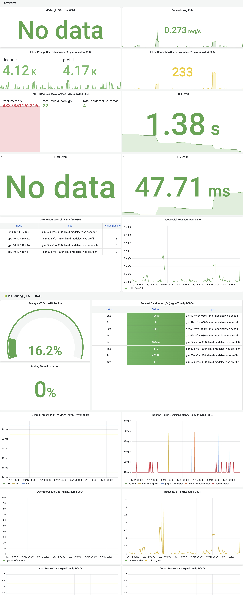

该原型以桌面控制台为主。移动端可查看状态和配置，复杂部署建议在桌面端完成。
YAML 部署
基本信息
模型配置
推理模式
部署清单
- 组件：llm-d、routing-proxy、nvidia-device-plugin、prometheus-agent
- 角色：prefill、decode、routing-proxy 与 llm-d router 独立配置
资源配置
* 网络资源参数
网络资源参数不能为空
prefill 启动命令
并行策略
Expert Parallel Size: TP × DP = 1
decode 启动命令
并行策略
Expert Parallel Size: TP × DP = 1
model-server 启动命令
并行策略
Expert Parallel Size: TP × DP = 1
dynamo-frontend 启动命令
worker pool 启动命令
并行策略
Expert Parallel Size: TP × DP = 1
gateway 启动命令
llm-d router 启动命令
高级配置
开启
未启用
类型
变量名 *
值
容器存活检查未启用
基础配置
示例：/bin/sh -c "touch /tmp/healthy; sleep 30; rm -f /tmp/healthy; sleep 600"
高级配置
容器就绪检查未启用
基础配置
示例：/bin/sh -c "curl -f http://127.0.0.1:8000/ready"
高级配置
容器启动检查未启用
基础配置
示例：/bin/sh -c "touch /tmp/healthy; sleep 30; rm -f /tmp/healthy; sleep 600"
高级配置
未启用
运行参数
运行参数不能为空
YAML 配置
编辑当前服务 YAML 文件，提交前可查看变化。
当前版本 YAML
编辑后 YAML
YAML 对比
左侧为集群当前 YAML，右侧为期望状态；确认后按目标 YAML 恢复。
当前 YAML
目标 YAML
MaaS 模型
| 模型名称 | 模型 ID | 模型标签 | 启用状态 | 集群 | 入口集群地址 | 网关状态 | 操作 |
|---|---|---|---|---|---|---|---|
| agent-business | agent-business | 文本生成 | 启用 | wy-cluster | - | 健康 | |
| agent-code | agent-code | 文本生成 | 启用 | wy-cluster | - | 健康 | |
| agent-code-complex | agent-code-complex | 文本生成 | 启用 | wy-cluster | - | 健康 | |
| agent-complex | agent-complex | 文本生成 | 启用 | wy-cluster | - | 健康 | |
| agent-fallback | agent-fallback | 文本生成 | 启用 | wy-cluster | - | 健康 | |
| agent-legal-health | agent-legal-health | 文本生成 | 启用 | wy-cluster | - | 健康 | |
| agent-math-fast | agent-math-fast | 文本生成 | 启用 | wy-cluster | - | 健康 | |
| agent-medium | agent-medium | 文本生成 | 启用 | wy-cluster | - | 健康 | |
| agent-simple | agent-simple | 文本生成 | 启用 | wy-cluster | - | 健康 | |
| agent-stem | agent-stem | 文本生成 | 启用 | wy-cluster | - | 健康 |
总共 45 条
基本信息
* 可见工作空间
* Token 权重
权重反映该模型相对于基准模型的计费权重。权重 = 1 表示 1 个 token 等值 1 个标准 token。
上游 Endpoint
模型类型
文本生成
模型服务是面向业务提供高性能推理能力的服务实例。服务支持 PD 分离、KV Cache Offload 等高效推理方式，实现面向不同推理阶段的性能优化、可观测与持续运维。
推理模式用于定义不同推理角色的执行方式。PD 分离将 Prefill 与 Decode 拆分为独立角色，可分别配置 GPU 资源，更适合长上下文和高并发场景；PD 一体则由单一角色承载完整推理流程，更适合中小模型或资源受限的服务。
正在加载模型服务
暂无匹配的模型服务
调整筛选条件，或通过右上角「新建部署」创建服务。
总共 4 条
服务观测按模型服务展示 Grafana 推理观测大盘：RPS、Token 吞吐、TTFT（首字延迟）、TPOT（逐字延迟）、KV 命中率与排队请求数。通过顶部服务切换可查看其他模型服务的大盘。
选择时间范围
自定义时间范围
开始时间 - 结束时间
2026-09-17 16:26
-
2026-09-17 17:26

模型测试面向已部署模型服务发起测试任务，对模型调用功能、性能等进行测试验收。
| 任务名称 | 目标服务 | 测试范围 | 状态 | 测试结果 | 创建时间 | 操作 |
|---|---|---|---|---|---|---|
| api-cli-deepseek-0824 | 功能测试 | 已完成 | 通过 | 2026-08-24 09:53:56 | ||
| function-dynamo-qwen3-0901 | 功能测试 | 进行中 | - | 2026-09-01 10:12:31 | ||
| knoway-qwen-validators-0831 | 功能测试 | 已完成 | 未通过 | 2026-08-31 15:44:57 | ||
| external-router-error-0902 | 功能测试 | 错误 | - | 2026-09-02 11:20:18 | ||
| external-router-openai-0901 | 功能测试 | 暂停 | - | 2026-09-01 14:30:00 |
总共 5 条
部署模板是一组经过优化与验证的模型服务配置，包含推理引擎、编排框架、推理模式、资源配置和并行策略等参数，用于快速部署高性能推理服务。「生产可用」表示模板已通过稳定性验证，可用于生产环境；「抢先体验」表示模板仍在验证阶段，适合试用与评估。
基本信息
配置信息
基本信息
配置信息
当前版本 YAML
编辑后 YAML
模型服务： deepseek-v4-flash-h800-prod 外部接入 拓扑与配置
Endpoint: deepseek-v4-flash-h800-prod-istio.inferx-prod.svc / Argo CD Health: Healthy / Sync: Synced / 模板版本 v1.3.2
基本信息
服务拓扑
llm-d router统一入口、路由1 正常 / 1 总量
prefill
资源配置2 副本，8 GPU H800，每副本 4 GPU，DP4
镜像docker.m.daocloud.io/vllm/vllm-openai:nightly
增强能力KV Cache Offload ⓘ
资源状态2 正常 / 2 总量
decode
资源配置1 副本，4 GPU H800，每副本 4 GPU，DP4 + EP
镜像docker.m.daocloud.io/vllm/vllm-openai:nightly
资源状态1 正常 / 1 总量
模型服务配置
| 模型权重 | |
|---|---|
| 模型访问名称 | deepseek-ai/DeepSeek-V4-Flash-0731 |
| 模型来源 | PVC |
| 模型子路径 | /models/deepseek-v4-flash-0731 |
| 挂载路径 | /mnt/data |
| 推理与资源 | |
|---|---|
| 编排框架 | llm-d |
| 推理模式 | PD 分离 |
| prefill | 2 副本，8 GPU H800，每副本 4 GPU，DP4 |
| decode | 1 副本，4 GPU H800，每副本 4 GPU，DP4 + EP |
| KV Cache Offload | Redis 服务：redhare-kvcache-prod |
| 访问方式 | |
|---|---|
| 服务地址 | deepseek-v4-flash-h800-prod-istio.inferx-prod.svc |
| 访问路径 | /V1 |
| 模型 ID | deepseek-ai/DeepSeek-V4-Flash-0731 |
按角色列出该服务在集群中创建的 Kubernetes 资源（Deployment / Pod / Service / ConfigMap 等）及其状态，可直接查看 YAML 或 Pod 日志。
prefill 2/2 Ready
节点：g-worker1, g-worker3 / 重启：0 / 资源：8 GPU, 128 CPU, 1200Gi| 资源类型 | 名称 | 状态 | 命名空间 | 节点 / 选择器 | |
|---|---|---|---|---|---|
| Deployment | deepseek-prefill | Available | inferx-prod | pool=h800-rdma | |
| ReplicaSet | deepseek-prefill-7f9c8 | 2 desired / 2 ready | inferx-prod | 继承 Deployment | |
| Pod | deepseek-prefill-0 | Running | inferx-prod | g-worker1 | |
| Pod | deepseek-prefill-1 | Running | inferx-prod | g-worker3 | |
| ConfigMap | deepseek-prefill-config | Mounted | inferx-prod | - | |
| PodMonitor | deepseek-prefill-metrics | Active | inferx-prod | app=prefill |
decode 1/1 Ready
节点：g-worker2 / 重启：0 / 资源：4 GPU, 64 CPU, 600Gi| 资源类型 | 名称 | 状态 | 命名空间 | 节点 / 选择器 | |
|---|---|---|---|---|---|
| Deployment | deepseek-decode | Available | inferx-prod | pool=h800-rdma | |
| ReplicaSet | deepseek-decode-6b82d | 1 desired / 1 ready | inferx-prod | 继承 Deployment | |
| Pod | deepseek-decode-0 | Running | inferx-prod | g-worker2 | |
| Service | deepseek-decode | Ready | inferx-prod | ClusterIP | |
| ConfigMap | deepseek-decode-config | Mounted | inferx-prod | - |
model-gateway 1/1 Ready
节点：g-master2 / 重启：0 / 资源：2 CPU, 4Gi| 资源类型 | 名称 | 状态 | 命名空间 | 节点 / 选择器 | |
|---|---|---|---|---|---|
| Deployment | deepseek-gateway | Available | inferx-prod | role=gateway | |
| Service | deepseek-v4-flash-h800-prod | Endpoint Ready | inferx-prod | ClusterIP | |
| InferencePool | deepseek-pd-pool | Routed | inferx-prod | prefill/decode | |
| HTTPRoute | deepseek-route | Accepted | inferx-prod | gatewayClass=inferx |
扩缩容策略按角色独立配置：手动策略固定副本数，自动策略依据排队请求或 GPU 利用率在副本范围内伸缩。
| 策略名称 | 策略类型 | 作用角色 | 触发条件 | 副本范围 | 状态 | 最后变更 | |
|---|---|---|---|---|---|---|---|
| scheduled-business-hours | 定时扩缩容 | prefill | 工作日 09:00 / 22:00 | 1 - 3 | 启用 | 2026-08-29 18:12 | |
| latency-auto-scale | 自动扩缩容 | prefill, decode | TTFT P90 > 900ms 或队列 > 32 | prefill 1 - 5, decode 1 - 3 | 启用 | 2026-08-30 11:48 | |
| gpu-utilization-guard | 自动扩缩容 | decode | GPU 利用率连续 10 分钟 > 85% | 1 - 3 | 观察中 | 2026-08-31 10:06 |
运行监控展示该模型推理服务的实时推理指标与趋势曲线。
操作记录保留该服务的创建、配置更新、扩缩容、回滚等管理操作，便于按操作人、来源和执行状态追溯变更。
| 操作时间 | 操作类型 | 操作人 | 变更摘要 | 执行状态 | 操作 |
|---|---|---|---|---|---|
| 2026-08-31 16:28:12 | 创建服务 | 张晓宇 | 基于 DeepSeek-V4-Flash / H800 模板创建服务 | 成功 | |
| 2026-08-31 16:31:07 | 更新配置 | 张晓宇 | 启用 RDMA，并将 prefill 副本数调整为 2 | 成功 | |
| 2026-08-31 16:42:55 | 扩缩容 | 自动扩缩容策略 | decode 队列持续高于阈值，已触发扩容检查 | 进行中 |
测试任务列出针对该服务发起的模型测试，可回看配置、报告，或从「模型测试」页新建任务。当前仅支持功能测试。
| 任务名称 | 测试范围 | 状态 | 创建时间 | 完成时间 | |
|---|---|---|---|---|---|
| api-cli-deepseek-0824 | 功能测试 | 已完成 | 2026-08-24 09:53 | 2026-08-24 10:08 | |
| deepseek-stream-longctx-0901 | 功能测试 | 进行中 | 2026-09-01 10:12 | - | |
| deepseek-knoway-validators-0830 | 功能测试 | 已完成 | 2026-08-30 15:44 | 2026-08-30 15:51 | |
| deepseek-runtime-error-0902 | 功能测试 | 错误 | 2026-09-02 11:20 | - |
历史版本保存每次发布后的配置快照及发布时间；可查看版本详情，或将服务回滚到任一已发布版本。
| 版本 | Commit | 变更类型 | 开始时间 | 发布时间 | 状态 | 操作 |
|---|---|---|---|---|---|---|
| v1.3.2 | a81c42f | 配置更新 | 2026-08-31 16:21 | 2026-08-31 16:28 | 当前版本 | |
| v1.3.1 | 9b7e13a | 配置更新 | 2026-08-30 21:09 | 2026-08-30 21:16 | 历史版本 | |
| v1.2.8 | 6f12d2e | 首次发布 | 2026-08-28 10:31 | 2026-08-28 10:42 | 历史版本 |